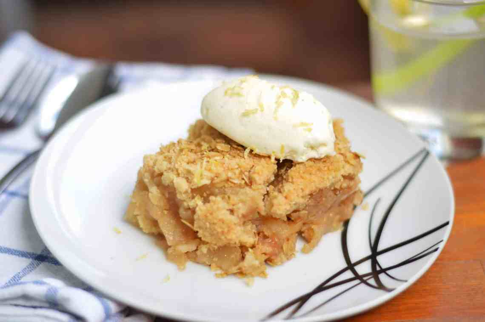

Home
Apple Crumble

Description
Apple crumble is one of my favorite easy to make desserts. Reminiscent of cobbler,
the crumbly topping with oats makes it seem... healthier? Let's not kid ourselves here,
this is a decadent dessert to induldge in. This classic dessert consists of tender,
cinnamon-spiced apples, topped with a buttery, crumbly streusel. With its warm,
inviting aroma and delightful combination of flavors and textures, apple crumble
is a quintessential fall treat that can be enjoyed all year round.
(Wikipedia)
Ingredients
- 4-5 apples, peeled, cored, and sliced
- 1 cup all-purpose flour
- 1/2 cup rolled oats
- 1/2 cup packed brown sugar
- 1/2 cup unsalted butter, softened
- 1 tsp ground cinnamon
- 1/2 tsp ground nutmeg (optional)
- 1/4 tsp salt
Steps
- Preheat your oven to 375°F (190°C).
- Place the sliced apples in a baking dish and spread them out evenly.
- In a separate mixing bowl, combine the flour, oats, brown sugar, cinnamon, nutmeg, and salt.
- Add the softened butter to the dry ingredients and use your fingers or a fork to mix until the mixture becomes crumbly.
- Sprinkle the crumble mixture evenly over the apples in the baking dish.
- Bake in the preheated oven for about 30-35 minutes or until the top is golden brown and the apples are tender.
- Once done, remove the apple crumble from the oven and let it cool slightly before serving.
- You can enjoy it as is or serve it with vanilla ice cream or whipped cream for an extra touch. Enjoy!